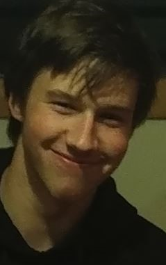

Hello, my name is Mathias and you have found my blog. I was born in Laingholm in west Auckland where I went to Laingholm Kindergarten and Laingholm Primary School and that's where I spent the first 9-ish years of my life. My favorite beach then was Cornwallis and it had no waves which I later grew to love the beach. In fact, I loved Cornwallis so much I had a birthday party there when I was young. Then we moved house to Titirangi in the Waitakere Ranges Where I attended Oratia district school and later Liston College. I grew to love the beaches on the west coast like Piha and Bethelles where my mum forced me to be a 'nipper' which is like training kids to be a lifeguard and getting them comfortable in the water which I hated at first but I ended up not minding then finished that and became a rookie lifeguard than a qualified lifeguard at Bethelles Beach. My Mum and Dad whose names are Anna and Wolfgang were getting sick of the Auckland traffic and the constant rush so they decided to move to Gisborne which I was not thrilled about but moved anyway with my brother and sister named Antonio and Maria. In Gisborne, I attended Campion College where I spent the rest of my schooling life.
I have played sports throughout my life and I think it has shaped the person I am now. I played football for the longest, from when I was starting primary to in my last years of college. My favorite sport I have played was Waterpolo, I never played competitively but I did enjoy playing for my school, I played water polo for 2 years while I was at Listion College. I was never really good at it but I loved to swim and mess around in the water. My favorite subjects at school are mostly science-based stuff like physics, I do like finding out how things work and how to explain simple things that I never understood or never thought about trying to understand without it. At the time of writing this the next stage in my life is to move back up to Auckland and start learning to become a web developer and start my career after that which I am very excited about but also nervous about entering the adult world.